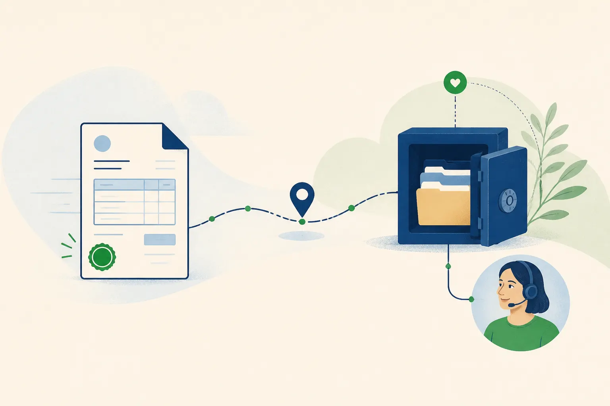

Déposez vos PDF : FactuSerein les prépare, contrôle les informations et les transmet via la plateforme partenaire pour vos factures B2B France, sans changer vos habitudes.
Téléchargement autonome
Après activation de votre compte, vous utilisez le logiciel en autonomie : il prépare, contrôle, transmet et suit chaque facture.
La réforme avance par étapes. Vous pouvez garder votre logiciel métier, continuer à produire vos PDF et préparer progressivement votre passage à la facturation électronique.
Périmètre FactuSerein aujourd'hui : factures B2B France. Le B2C et l'international ne sont pas pris en charge dans cette version.
Les nouvelles règles sont difficiles à suivre. L'application contrôle les informations avant toute transmission.
Grippen, Vega, GmVet, Popina, Ikosoft… Vous pouvez garder votre logiciel métier et déposer vos factures PDF dans notre dossier.
Les alertes signalent les rejets et les statuts importants pour que vous sachiez rapidement quoi traiter.
Le principe : un dossier sur votre ordinateur. Vous déposez vos PDF, le service les prépare et les traite ensuite.
Continuez à utiliser votre logiciel métier. Exportez votre facture en PDF puis déposez-la dans votre dossier FactuSerein.
Le service extrait les champs par deux canaux (vision + texte), compare les informations et signale les divergences avant la validation manuelle finale. Les données sont ensuite préparées pour la transmission.

Après la validation manuelle finale, le service prépare le format Factur-X, le transmet via la plateforme partenaire configurée pour votre compte et synchronise les statuts. Les factures reçues sont récupérées dans l'application.
Fonctionnalités de facturation
FactuSerein prépare les documents et les données utiles au contrôle avant transmission via la plateforme partenaire du compte.
Le résultat dépend des informations présentes dans le PDF et de la configuration du compte. Le périmètre B2C et international n'est pas inclus dans la version actuelle.
Option selon votre activité
Le parcours principal de FactuSerein reste la préparation, la transmission et le suivi des factures B2B France. Selon votre activité et votre régime de TVA, une saisie séparée des encaissements peut être proposée pour certains services ou acomptes.
L'activation est facultative dans l'application. Si votre entreprise est soumise à une obligation, cette obligation réglementaire reste applicable.
FactuSerein V1 est limité au B2B France. Le B2C, les opérations internationales et les autres cas d'e-reporting ne sont pas promis dans cette version. Si votre situation est inconnue, l'option reste désactivée jusqu'à confirmation.
Votre logiciel métier n'est pas raccordé ? Nous ne vous demandons pas de le quitter : le service crée un pont de préparation et de transmission vers la plateforme de votre compte.
Grippen, EdiBati, Onaya, Tolteck, Obat, Costructor, Hyspeed… Vos devis et factures restent sur votre outil : le dépôt se fait en quelques secondes.
Vega, GmVet, Dr Veto, Compta Idel, Hopitalia… Kinés, infirmiers, vétérinaires : la facturation B2B (fournisseurs, cliniques) doit passer à l'électronique.
Popina, Loyco, Logicone… FactuSerein couvre ici vos factures B2B France (traiteurs, fournisseurs, événementiel), pas les tickets B2C.
Ikosoft, Planity, Zenio… FactuSerein vous aide à recevoir vos factures B2B France. Le volet e-reporting B2C n'est pas inclus dans le périmètre actuel.
Garages (OneGest, Gestauto), agences immobilières (Gestilo, DigitImmo), associations (AssoConnect), grossistes (Gespro, Gestimum)…
Zervant, Henrri, Freebe, Zoho Invoice, Facture.net… Votre outil n'est pas une plateforme agréée : notre dossier conforme prend le relais sans changer votre quotidien.
Formule annuelle prépayée, zéro frais d'initialisation, Remboursement sous 14 jours si le compte n'est pas activé.
24 € /mois HT
Mensuel 28,80 € TTC · Annuel 264 € HT (1 mois offert) · remboursement 14 jours
59 € /mois HT
Mensuel 70,80 € TTC · Annuel 649 € HT (1 mois offert) · remboursement 14 jours
Offre sur-mesure au-delà de 1 000 factures / mois (PME, ETI). Commission possible pour les experts-comptables : nous contacter.
Téléchargez l'application et créez votre compte en autonomie. Une question ? Le contact reste disponible par email.
Décrivez votre besoin dans le formulaire de contact. Votre message est transmis à contact@factuserein.fr pour une réponse par email si nécessaire.

Compatible Windows 10 et 11. Téléchargez et installez sans rendez-vous. Après validation des informations et du virement, déposez vos factures : l'application transfère vos PDF au service, qui les prépare et suit leur traitement.
Toute entreprise assujettie à la TVA établie en France est concernée, quelle que soit sa taille. À partir du 1er septembre 2026, vous devez pouvoir recevoir des factures électroniques via une plateforme agréée. Au 1er septembre 2027, les PME et micro-entreprises devront émettre leurs factures B2B au format électronique. L'e-reporting dépend des opérations concernées et de votre situation. Le périmètre actuel de FactuSerein est limité au B2B France.
Vous déposez vos factures PDF et l'application automatise la préparation, la vérification, la transmission et le suivi. Vous gardez votre logiciel métier sans double saisie obligatoire.
Si votre logiciel ne prend pas en charge le parcours attendu, vous pouvez garder votre outil : vous déposez vos factures, puis vous vérifiez les données préparées avant transmission. Le rôle exact de chaque solution et de la plateforme partenaire doit être confirmé selon votre configuration.
Le parcours gère les factures, avoirs, factures correctives, acomptes, promotions et remises, ainsi que les frais. Il prépare aussi les données structurées CII dans le document Factur-X et distingue l'adresse du client de l'adresse de livraison. Les totaux HT, TVA et TTC sont contrôlés ; si une donnée ou une référence ne correspond pas, la facture reste à corriger avant transmission.
L'adresse du client identifie le destinataire juridique. L'adresse de livraison est séparée lorsqu'elle est indiquée sur la facture ; sinon, le destinataire est repris comme adresse de livraison par défaut dans le document structuré. Vous pouvez vérifier cette distinction dans l'écran de contrôle.
Le service vérifie la structure XML CII, les parties émetteur et destinataire, les identifiants, les dates, les lignes, les catégories de TVA, les totaux et les références utiles. Un rapport de pré-contrôle de la plateforme est demandé avant transmission quand il est disponible pour votre compte.
Non. Le module d'e-reporting d'encaissements peut concerner certaines prestations de services et certains acomptes lorsque la TVA est exigible à l'encaissement. Il est désactivé par défaut et s'active dans l'application après confirmation de votre situation. Cette activation est facultative dans le logiciel, mais elle ne supprime pas une obligation réglementaire si votre entreprise est concernée. Dans cette version, le produit reste limité au B2B France : les ventes B2C et les opérations internationales ne sont pas gérées.
Non. L'application demande uniquement la date et le montant de l'encaissement, avec une ventilation de TVA si elle est nécessaire. Elle ne collecte ni IBAN ni relevé bancaire.
Les obligations, échéances et sanctions dépendent de votre situation et de la réglementation en vigueur. Le service peut vous aider à structurer un parcours de préparation et de suivi ; il ne remplace pas une vérification juridique, fiscale ou comptable.
Oui. Vos fichiers sont chiffrés en transit et traités uniquement pour la préparation, la transmission et le suivi de vos factures. Détails dans notre politique de confidentialité et dans les mentions légales disponibles dans l'application.
Lors des premières versions, Windows peut afficher « Windows a protégé votre PC » ou « application non reconnue » lorsque la signature de l'éditeur ou la réputation du fichier n'est pas encore établie. La signature de l'éditeur et le parcours de publication Microsoft sont en cours : cette version n'est donc pas présentée comme déjà certifiée par Microsoft. Téléchargez uniquement l'installeur depuis notre page officielle, vérifiez son empreinte SHA-256 affichée sur la page Télécharger et ne désactivez pas SmartScreen. Une politique d'entreprise peut empêcher le contournement de l'avertissement.
Formule mensuelle : les modalités figurent dans la version contractuelle affichée avant souscription. Formule annuelle : le prix et les conditions de sortie sont également précisés dans cette version. Les règles de conservation des factures restent à vérifier selon votre contrat et vos obligations.
Décrivez simplement votre question ou votre besoin. Votre message sera transmis à contact@factuserein.fr.